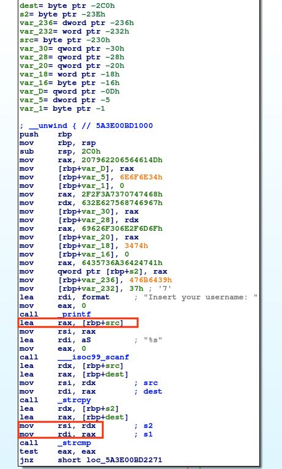
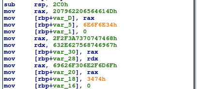
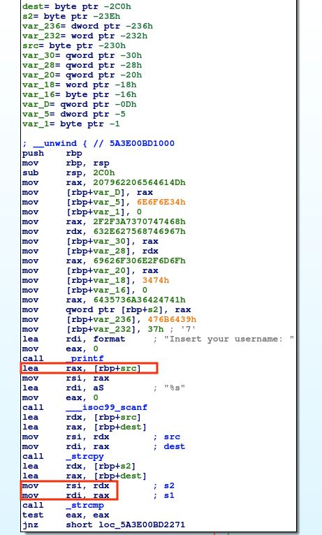
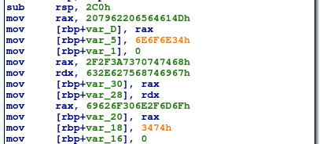
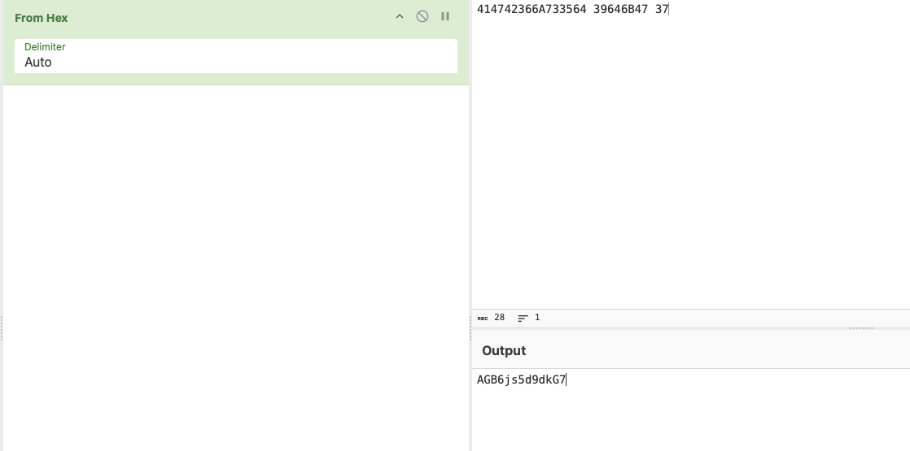
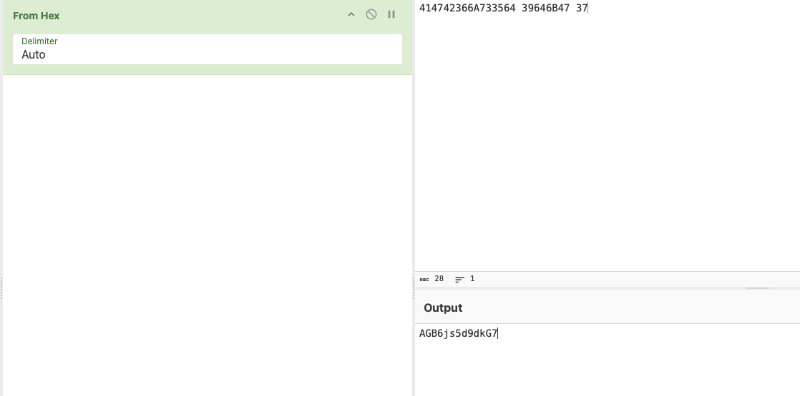

Classic Passwd - TryHackMe
Introduction
This write-up covers the Classic Passwd challenge from TryHackMe. Time to roll up our sleeves and start reversing.
Analysis
The simplest way to examine the program is to run it. When executed, the sample asks for a username. Entering a value such as test results in an
authentication error.
 Opening the binary in IDA, the main function appears as shown in the figure below. Inside main, two functions are called:
vuln and gfl.
Opening the binary in IDA, the main function appears as shown in the figure below. Inside main, two functions are called:
vuln and gfl.
 Inside the vuln function, several memory write operations are performed at the beginning.
The function then calls printf to display the message "Insert your username: ". The user input is stored at ebp+src
and subsequently copied into rdi using strcpy. Finally, the string s2, stored in
rsi, is compared with the user input using strcmp. If the result of the comparison is 0, the two strings are equal
and execution follows the left branch; otherwise, the program fails.

The only part that needs to be understood in order to determine the correct username is the first portion of the function, where a large number of bytes are allocated in memory.
First, 0x2C0 (704) bytes are allocated on the stack. The hexadecimal value 0x207962206564614D
is loaded into rax and then stored on the stack at var_D. After that, the values
0x6E6F6E34 is stored contiguously on the stack at var_5. Next, the values 0x2F2F3A7370747468
and 0x632E627568746967 are stored one after the other in contiguous memory locations, at var_30 and
var_28. Finally, the value 0x69626F306E2F6D6F is stored contiguously on the stack at
var_20, followed immediately by the value 0x3473 at var_18.
Any NULL bytes are omitted for clarity.

By using CyberChef, it is possible to input all these values to convert them into ASCII characters. The figure below shows the resulting output.
As can be seen, this is likely a small easter egg inserted by the binary’s developer. Note: All of these values are stored in little-endian format in memory,
so they must be entered in reverse byte order.
Inside the vuln function, several memory write operations are performed at the beginning.
The function then calls printf to display the message "Insert your username: ". The user input is stored at ebp+src
and subsequently copied into rdi using strcpy. Finally, the string s2, stored in
rsi, is compared with the user input using strcmp. If the result of the comparison is 0, the two strings are equal
and execution follows the left branch; otherwise, the program fails.

The only part that needs to be understood in order to determine the correct username is the first portion of the function, where a large number of bytes are allocated in memory.
First, 0x2C0 (704) bytes are allocated on the stack. The hexadecimal value 0x207962206564614D
is loaded into rax and then stored on the stack at var_D. After that, the values
0x6E6F6E34 is stored contiguously on the stack at var_5. Next, the values 0x2F2F3A7370747468
and 0x632E627568746967 are stored one after the other in contiguous memory locations, at var_30 and
var_28. Finally, the value 0x69626F306E2F6D6F is stored contiguously on the stack at
var_20, followed immediately by the value 0x3473 at var_18.
Any NULL bytes are omitted for clarity.

By using CyberChef, it is possible to input all these values to convert them into ASCII characters. The figure below shows the resulting output.
As can be seen, this is likely a small easter egg inserted by the binary’s developer. Note: All of these values are stored in little-endian format in memory,
so they must be entered in reverse byte order.
 In the second part of the function, operations similar to those described previously are performed, consisting of a series of values written to memory.
By applying the same steps as before and using CyberChef, it is possible to reconstruct the username that will later be compared with the input provided by the user.
The two figures below show, respectively, the relevant code and the conversion of the hexadecimal values using CyberChef.
In the second part of the function, operations similar to those described previously are performed, consisting of a series of values written to memory.
By applying the same steps as before and using CyberChef, it is possible to reconstruct the username that will later be compared with the input provided by the user.
The two figures below show, respectively, the relevant code and the conversion of the hexadecimal values using CyberChef.
 
The next function called in main is gfl. This function does not perform any complex operations;
it simply compares the values of var_4 and var_8 with the constants 0x638A78 and
0x2130, respectively. When both conditions are satisfied, the program prints the flag, which is simply the concatenation of the values stored in
var_4 and var_8.

The next function called in main is gfl. This function does not perform any complex operations;
it simply compares the values of var_4 and var_8 with the constants 0x638A78 and
0x2130, respectively. When both conditions are satisfied, the program prints the flag, which is simply the concatenation of the values stored in
var_4 and var_8.
 In any case, the correct username has been identified. By executing the program and providing the recovered username as input, the flag is successfully obtained.
In any case, the correct username has been identified. By executing the program and providing the recovered username as input, the flag is successfully obtained.